GrowTopia Manufacturing · Carneys Point, New Jersey
GrowTopiaSnaps Linethe Easysnap Pulsar 351
Two films in, filled and sealed single-dose packs out. Every component of the Pulsar 351 drawn piece by piece and running live: watch Growtopia Snaps formed, dosed, sealed, coded and scored, then take the machine apart down to the parts.
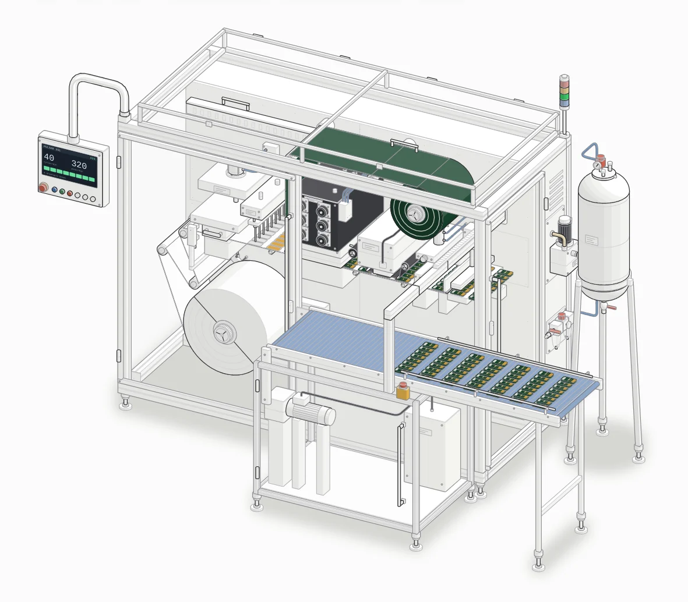
Starting the machineLine data
Easysnap Pulsar 351- Output
- 320packs/min
Up to, on 8 lanes at 40 cycles a minute.
- Cycle rate
- 40cycles/min
Up to. One row of packs per cycle.
- Lanes
- 4–8lanes
Packs side by side across the web.
- Reel width
- 351mm
One reel width for every Easysnap pack size.
- Fill
- 0.1–30ml
Per pack. The maximum depends on the product's viscosity.
- Product tank
- 316Lstainless
A pressure tank feeds the dosing pump.
- Print frame
- 351 × 100mm
Thermal transfer, for the lot and date code.
- Footprint
- ≈ 2.8 × 1.6m
With the outfeed; about 2.0 m to the stack light. Estimated from photos.
Values come from Easysnap's published specifications. The footprint is estimated from photos, scaled from the 351 mm reel; Easysnap doesn't publish overall dimensions. The machine is built ready for Industry 4.0 remote monitoring.
Film to finished pack, step by step
The machine in the order a pack meets it. Numbers are Easysnap's own for each component. See any part run, take it apart, or follow its assembly steps.
The film
-
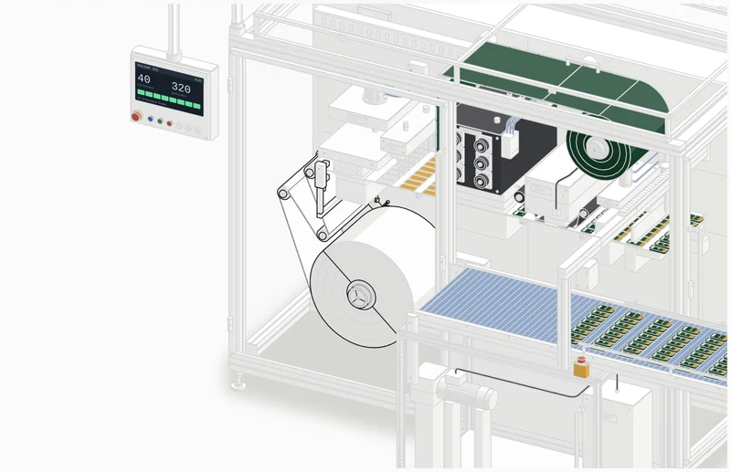
Bottom film unwinder
351 mm reel, one width for every pack size
The bottom film comes off a cantilevered reel and over a dancer arm that keeps the web tension even as the machine indexes. The same 351 mm reel width runs every Easysnap pack size.
-
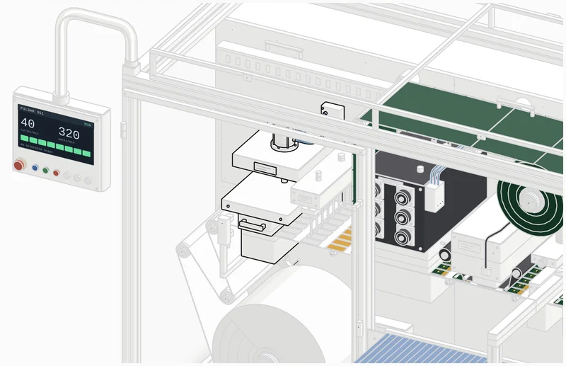
Pouch die cutter
One row of pack shapes per cycle
A press forms the pack shape in the bottom film for every lane at once, one row per cycle, at up to 40 cycles a minute.
The product
-
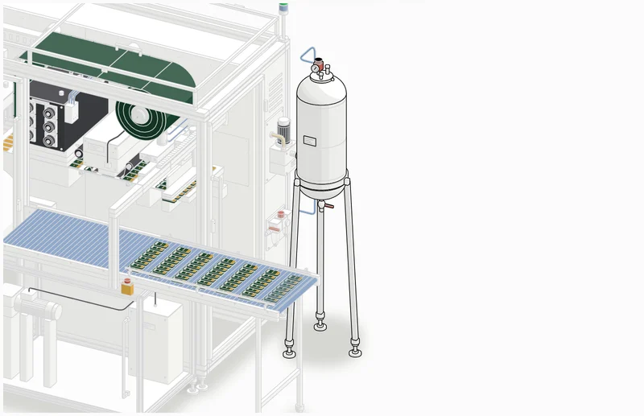
Pressure tank
316L stainless, under air
Holds the product under air pressure so it feeds the dosing pump steadily. It comes apart with the filling system, as one assembly.
-
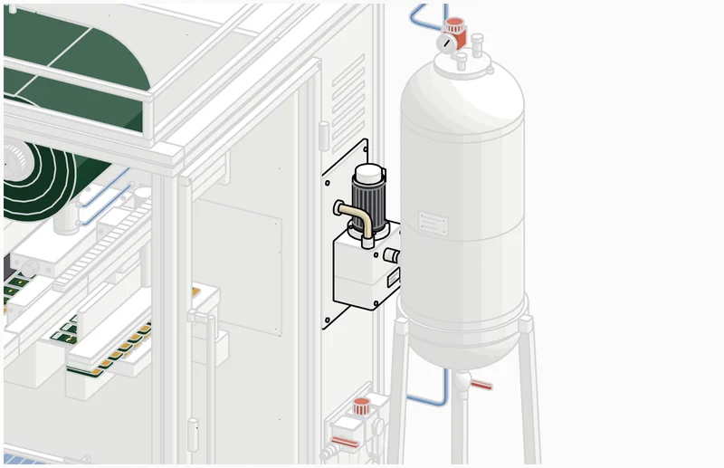
Dosing pump
0.1–30 ml per pack
Meters each dose from the tank to the filling manifold. Fill runs from 0.1 to 30 ml per pack, depending on how viscous the product is.
-
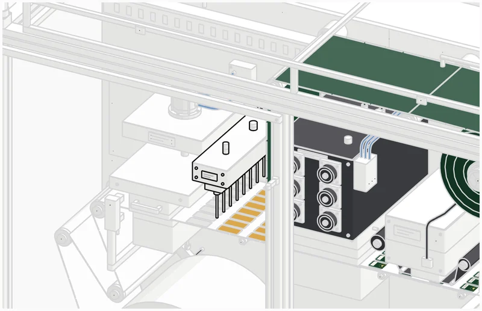
Product filling system
One nozzle per lane, 4–8 lanes
A manifold splits each dose across the lanes and the nozzles fill every pack in the row at once. Easysnap builds it for any kind of liquid.
Close, code and score
-
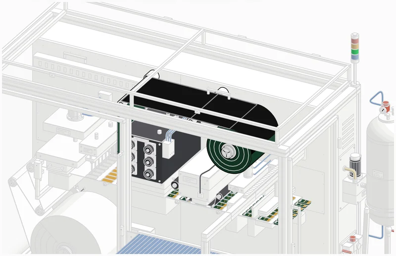
Top film unwinder
The pre-printed Growtopia Snaps film
The printed top film runs over its idlers and is laid on the filled row, where the sealing station seals it to the bottom film and closes every pack.
-
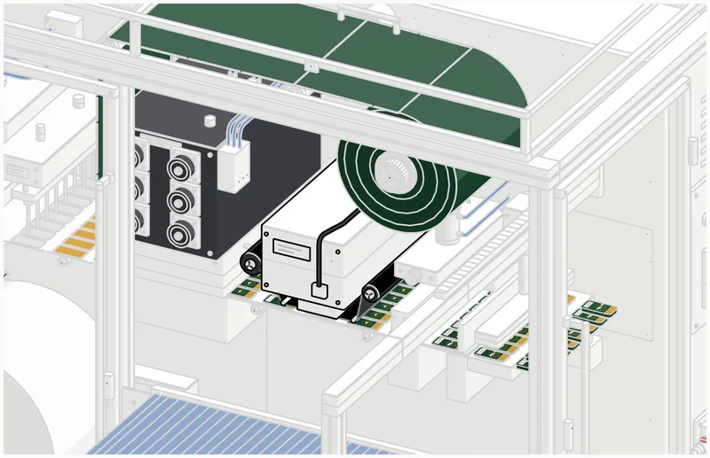
Heat transfer printing unit
351 × 100 mm print frame
Prints the lot and date code on each pack through a thermal ribbon. The artwork is already on the film; the printer adds the traceability.
-
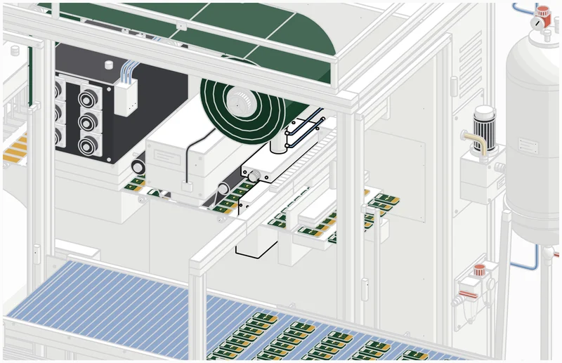
Precut system
Scores the snap line
Scores the line across each pack that lets it snap open when it's bent, without opening it on the machine.
-
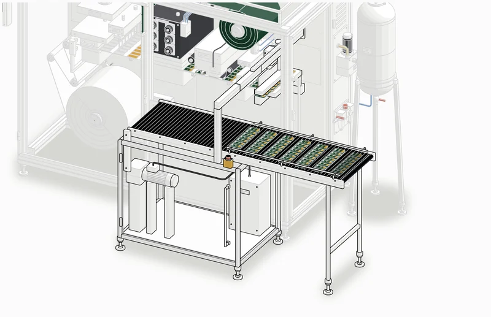
Conveyor with pick & place
Up to 320 packs a minute out
Each finished row is cut free and the pick & place head lifts it onto the outfeed belt, ready for packing. At 40 cycles a minute on 8 lanes that is up to 320 packs a minute.
Supporting the line
-
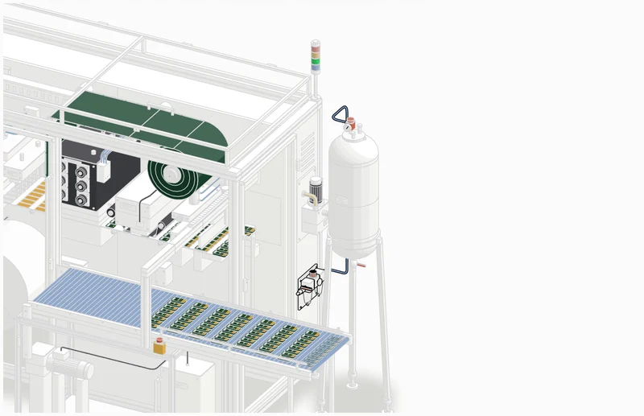
Air supply connection
Filter, regulator and gauge
Plant compressed air comes in through a filter and a regulator with a gauge, and feeds the machine's pneumatics.
-
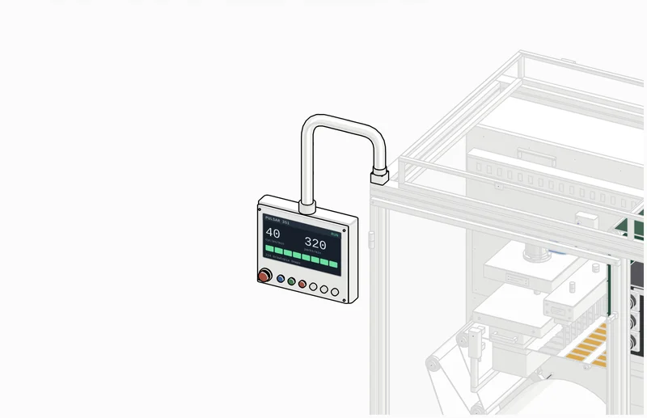
Swinging arm control panel
Touch screen and e-stop
The operator panel swings out on its stainless arm to set lanes, speed and fill and to watch the run. The machine is ready for Industry 4.0 remote monitoring.
Taken apart
The Pulsar separates into its assemblies, the order a technician would take it down. Pick one and it comes apart into its own numbered parts, with a parts list and the steps to build it back.
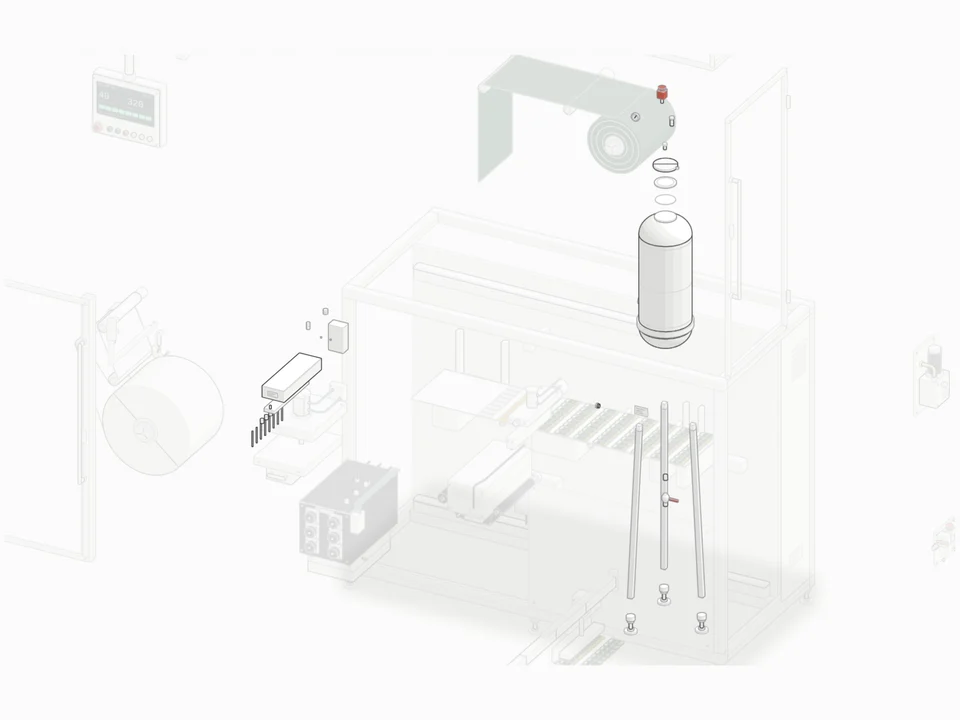
Filling system and pressure tank
The 316L tank lifts off its stand; the regulator, manifold and nozzle bar come away.
Take it apart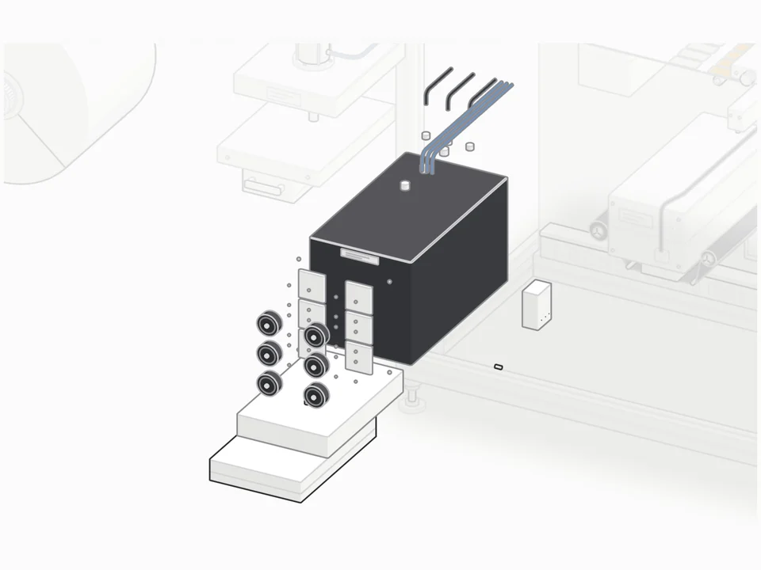
Sealing station
15 parts. The servo block, its motors and the heated seal head separate.
Take it apart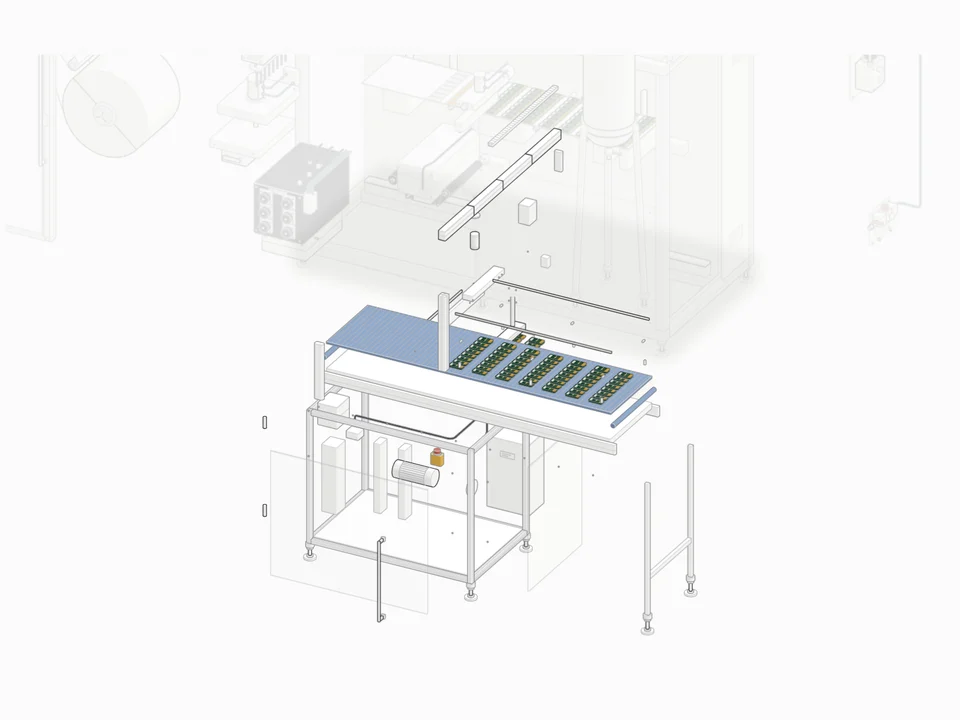
Conveyor with pick & place
44 parts. Gantry, knife, pick & place head, belt and gearmotor lift clear of the frame.
Take it apart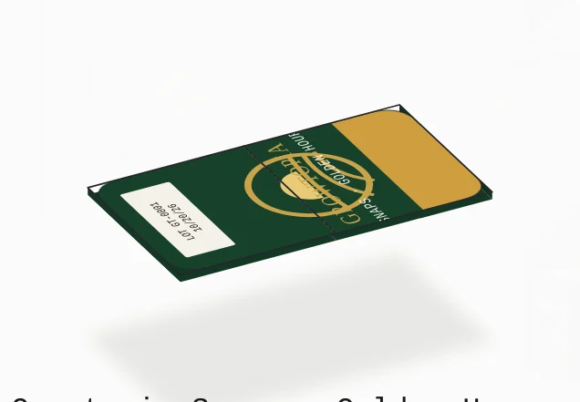
Growtopia Snaps
A flat, semi-rigid single-dose pack. No cap, no tear strip: it opens along the line the precut system scores across it.
- Bend it into a V along the scored line, with the pack's face toward you.
- It snaps open at the score, at the point of the V.
- Pour with one hand, squeezing the two halves together.
Flavour colours are placeholders until the label art is final.
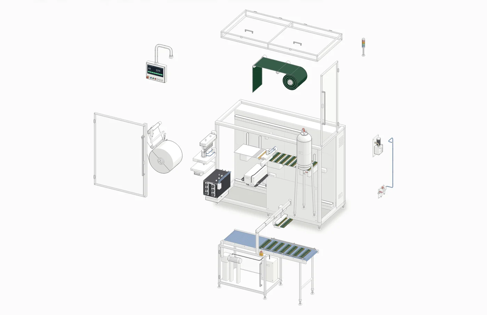
The drawing
The Pulsar 351 as an isometric technical drawing, light enough for any laptop or phone.
- The process running live, with lanes, speed, fill and flavour
- A two-level take-apart: the assemblies, then each one down to its parts
- A parts list and step-by-step assembly sheet for every assembly
- Follow one pack from the reel to the conveyor
- Snap a finished pack open